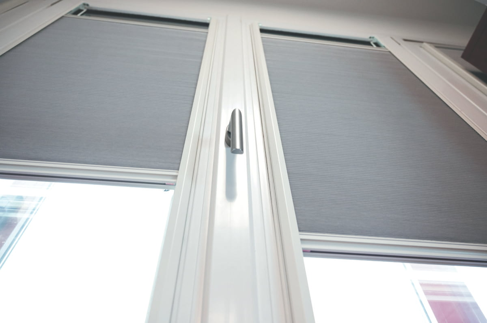
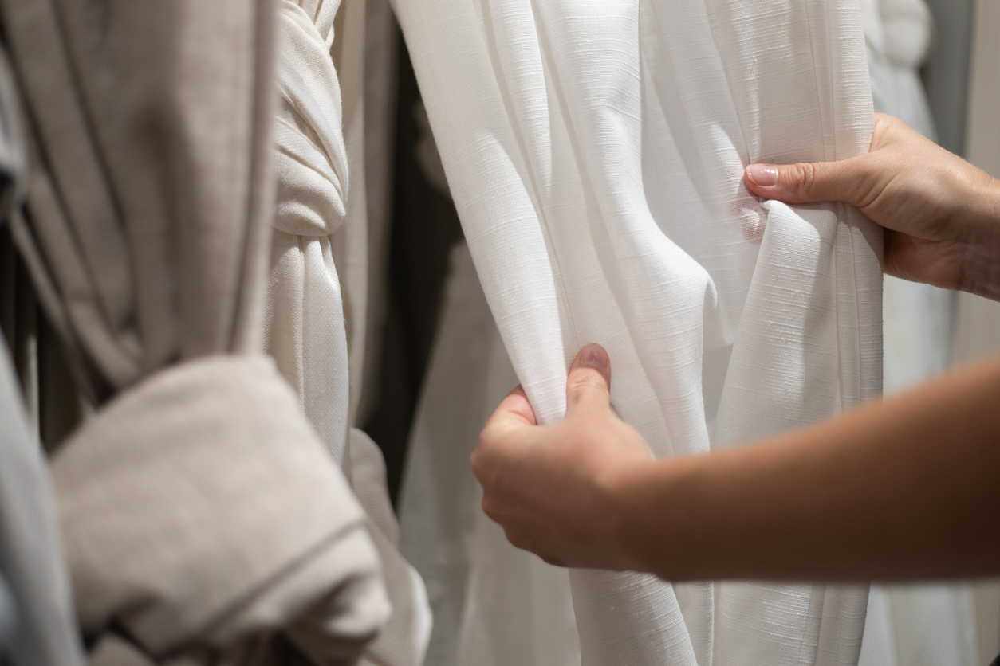
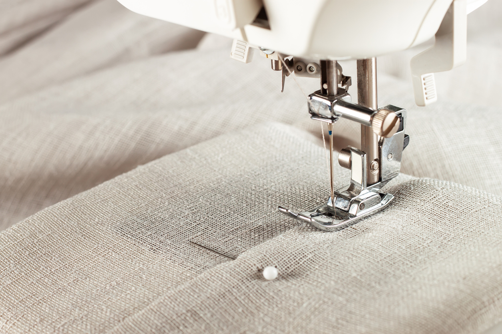
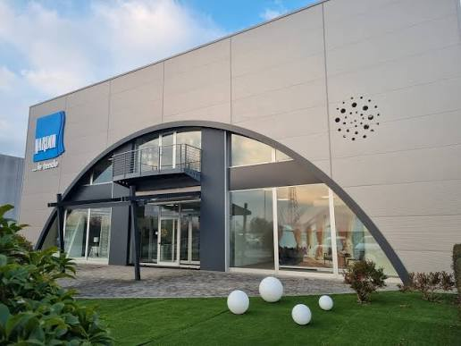

Tende su misura a Treviso e Venezia · dal 1974
Dove laluce conta.
Tende su misura per case, uffici e hotel tra Treviso e Venezia. Le scegliamo insieme a te, le cuciamo nel nostro laboratorio e veniamo a montarle.
Chi siamo
Chi siamo
Dal 1974 lavoriamo con tessuti, misure e luce. Ogni tenda parte da una chiacchierata, prende forma nel nostro laboratorio a Ponte di Piave e arriva a casa tua montata dalle stesse persone che l’hanno pensata.
Tende e soluzioni
Di cosa ha bisogno la tua casa?
-

Gestire la luce
Tessuti filtranti che ammorbidiscono il sole senza buttare la stanza nel buio: niente abbagliamento sullo schermo, ma la vista resta.
-

Più privacy
Veli tecnici e doppie tende scelte in base a come è esposta la finestra. Di giorno guardi fuori, da fuori non si vede dentro.
-

Dormire al buio
Tessuti oscuranti, rulli o plissé a doppia tela. Puoi abbinarli a un velo sullo stesso binario e usare la camera anche di giorno.
-

Senza forare
Sistemi che si agganciano direttamente all’infisso, senza fare buchi. Comodi se sei in affitto o se i serramenti sono nuovi.
Realizzazioni
Lavori finiti, raccontati dall’inizio
Come lavoriamo
Dal sopralluogo all’ultima piega, ci siamo sempre noi.
Una persona sola ti segue dall’inizio alla fine. Niente passaggi a ditte esterne, nessuno scaricabarile se qualcosa va sistemato.
Il metodo completo-

Ascolto
Ci racconti come vivi la stanza: a che ora batte il sole, chi passa davanti alla finestra, cosa ti dà fastidio oggi.
-

Rilievo a casa tua
Veniamo a misurare finestre, attacchi e ingombri. È il passaggio che evita le sorprese il giorno del montaggio.
-

Scelta dei tessuti
Provi i campioni nella luce della tua casa, non sotto i faretti del negozio. Cambia più di quanto sembri.
-

Confezione e posa
Cuciamo le tende in laboratorio e veniamo a montarle. Se più avanti serve una modifica o un lavaggio, sai a chi chiedere.
Il laboratorio
Ogni tenda passa dalle nostre mani.
Orli, pieghe, cuciture, finiture: è il lavoro che non si vede e che decide come cade una tenda e quanto dura.
Entra nel laboratorioChi siamo
-
La storia
Dal 1974, la stessa famiglia dietro ogni tenda
Dal 1974 il mestiere è lo stesso: ascoltare, misurare, cucire. Sono cambiati i tessuti e i sistemi, e li seguiamo uno per uno.
La nostra storia -

Il laboratorio di Ponte di Piave
Un laboratorio interno, non un magazzino
Dietro lo showroom di Ponte di Piave c’è la nostra sartoria. Tagliamo, cuciamo e montiamo con il nostro personale: niente appalti a terzi.
Guarda il laboratorio -

Showroom e territorio
Tre showroom tra Treviso e Venezia
Ponte di Piave, Fossalta di Portogruaro e, da poco, Mogliano Veneto. Vieni a vedere le tende montate e a toccare i tessuti: il preventivo è gratuito.
Scopri gli showroom
News
Ultime novità
-
Come scegliere le tende per il soggiorno
[Anteprima da compilare]
-
Nuovi tessuti oscuranti in showroom
[Anteprima da compilare]
-
Dietro le quinte: una giornata in laboratorio
[Anteprima da compilare]
-

Tende per hotel: cosa cambia rispetto a casa
[Anteprima da compilare]
Showroom
Dove trovare lo showroom Nardin più vicino a te?
Scrivici o passa a trovarci: siamo a Ponte di Piave, Fossalta di Portogruaro e Mogliano Veneto.
FAQ
Domande frequenti
Sì, e a misurare viene sempre una persona del nostro team, mai un tecnico esterno. Copriamo le zone servite dai tre showroom. [Condizioni ed eventuale costo del sopralluogo.]
Dipende soprattutto dal tessuto: quelli a magazzino sono più rapidi, quelli su ordinazione richiedono più tempo. In media [tempo medio] da quando scegli i tessuti. La data te la confermiamo insieme all’ordine.
Sì. Esistono sistemi che si fissano sull’anta o sul telaio senza fare buchi, utili in affitto o su serramenti ancora in garanzia. In sopralluogo verifichiamo se il tuo infisso li regge.
Sì, seguiamo anche hotel, uffici e strutture ricettive, dal rilievo alla posa camera per camera. [Riferimenti su capitolati, tessuti ignifughi e tempi di cantiere.]
Professionisti
Sei un architetto o un progettista?
Architetti, interior designer e strutture ricettive hanno un referente unico, campionature e tempi concordati con il cantiere.